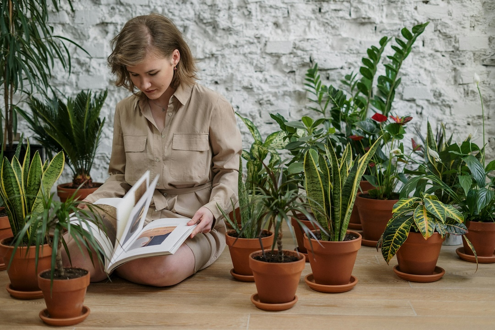
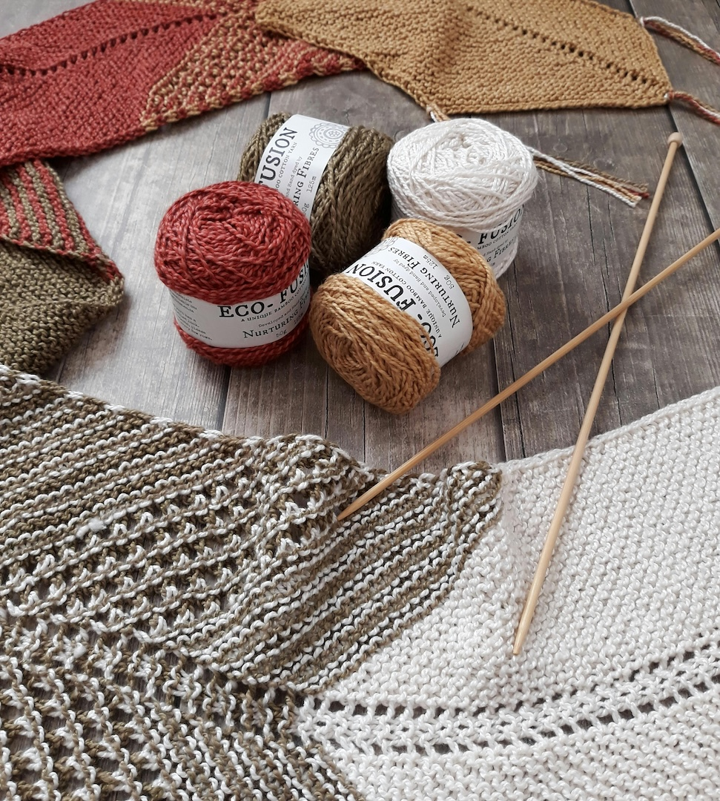

Our Top 5 Products
Origami HobbyBox
Your gateway to the timeless are of paper folding is here! For newcomers and seasoned enthusiasts alike, this HobbyBox is designed to inspire your creativity and ignite (or even re-ignite) your passion for origami. Inside you will find a vibrant assortment of high-quality origami paper in varying colors, textures, and thicknesses, all of which are specially selected for its durability and ease of folding that will help your creations turn out beautifully. You will also receive origami folding tools such as scoring tools and smooth-edge Teflon folders designed to give you crisp, clean folds and intricate details in your origami creations, which can be displayed with style by using the display stand included with the kit. And, of course, we don’t want to leave you wondering what to do with all of these supplies! We have created a step-by-step instruction booklet that will help you plunge into the world of origami with incredible designs of varying difficulty that will teach you the basics of origami as well as help you create a variety of traditional and modern origami designs.
Painting HobbyBox

Looking for a good place to start on your painting journey can be a stressful, maybe even discouraging experience. Luckily, we’ve done most of the hard work for you! In our painting HobbyBox, we have everything you need to get started. From high-quality paints to a variety of professional brushes and canvas panels, expressing yourself through art has never been easier. To help you even further, we’ve included a sketchbook and artist-grade pencils to help with planning your next masterpiece, as well as an instructional guide that’s got you covered whether you’re new to painting or just looking to refine your skills. Whether you’re looking to paint for relaxation, self-expression, or creative exploration, this HobbyBox has everything you will need to start bringing your artistic vision to life.
Gardening HobbyBox
If you have been looking for a gateway to the wonderful world of gardening, you have come to the right place! Whether you are a seasoned green thumb or just now starting your gardening journey, this kit is designed to give you everything you need to cultivate your own personal garden. Included in this kit is a carefully selected set of basic gardening tools that will help you work with your plants with ease, along with a variety of seeds you need to grow beautiful flowers, fresh herbs, or delicious fruits and vegetables. We’ve also thrown in our gardening guide that will give you the know-how to make you the master gardener in any group in no time. With tips and tricks included to help you know how to get started and the tools to keep your plants looking great, your own personal garden will be looking amazing in no time!
Soap Carving HobbyBox
Introducing our Soap Carving Starter Kit – the perfect introduction to the art of soap carving for beginners and enthusiasts alike! Inside this box you will find a premium-quality soap block specially selected for its specific properties, like its smooth texture, that works with you rather than against you while you form your masterpiece. You will also receive assorted caring tools ranging from precision knives to quality shaping tools specially crafted for comfort and precision, allowing you to carve with ease and confidence. All of this comes with a step-by-step guide that will get you started on your carving journey that contains several different ideas for your first stunning design, along with tips and tricks to help it come out just how you envision it.
Knitting HobbyBox
Have you ever wanted to dive into the world of knitting? Maybe you want to elevate your current knitting experience? Our knitting HobbyBox has everything you need to do just that! This carefully curated kit comes with a luxurious assortment of premium yarn in an array of colors and textures. You will be able to take command of whatever yarn you work with using the variety of knitting needles included in the kit. You can stay organized and keep track of your stitches with the stitch markers and row counters that are provided. To elevate your experience, we have also included our exclusive pattern booklet that is packed with knitting patterns and designs both classic and unique. Whether you are knitting scarves, hats, or sweaters, any inspiration or guidance you may need can be found in this booklet.